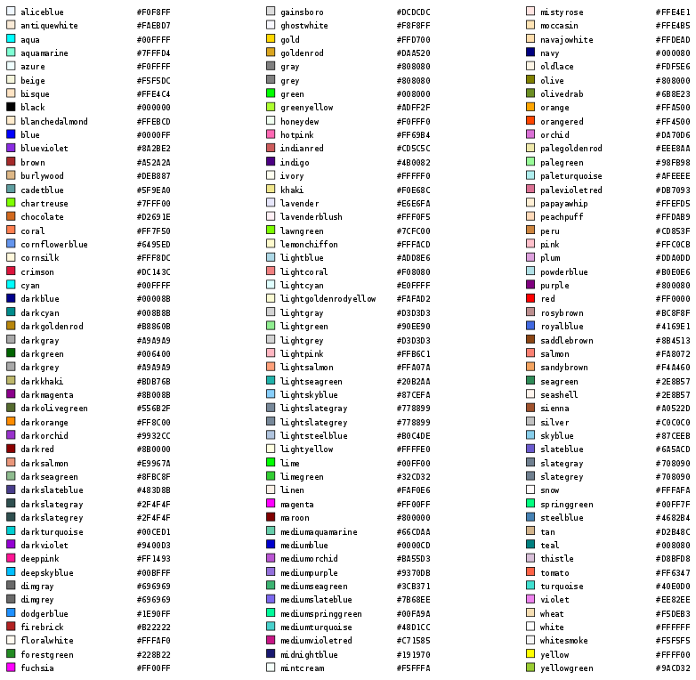
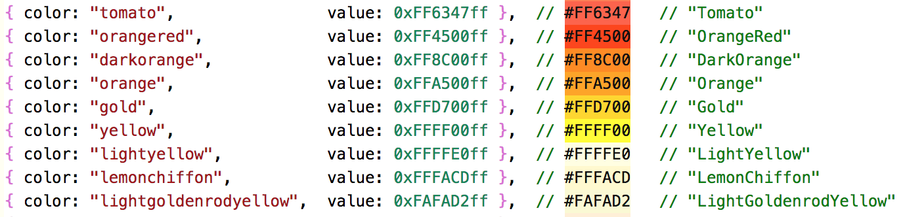

Application Basics
Overview
It is easy to get a "Hello World" app up and running in Spark. But there are some basics to keep in mind when beginning to build more complex applications.
Please note: This page is still under construction.
Building Blocks
Basic Properties
Colors

HTML/CSS Named Colors
Read more: HTML Color Names
Available as of Spark v =1.6.0.1. Check for
(scene.capabilities.graphics.colors >= 2)
Spark now supports HTML/CSS colors syntax and naming conventions for setting colors.
This means that wherever you used
fillColor, textColor, lineColor with a hexidecimal 0xRRGGBBAA value in the past ...
var rect1 = scene.create({ t: 'rect', parent: root, fillColor: 0xFF0000ff, lineColor: 0x000000ff,
lineWidth: 2, x: 0, y: 0, w: 100, h: 100, interactive: false });
... now supports -
rect1.fillColor = 0xFF0000ff; // RED rect1.fillColor = "#f00"; // RED rect1.fillColor = "#ff0000"; // RED rect1.fillColor = "#f008"; // RED 50% alpha rect1.fillColor = "#ff000088"; // RED 50% alpha
The following is now supported ...
var rect2 = scene.create({ t: 'rect', parent: root, fillColor: '#0808', lineColor: '#000f',
lineWidth: 1, x: scene.w/2, y: scene.h/2, w: 100, h: 100, px: 0.5, py: 0.5,
interactive: false });
... notice the fillColor: '#0808' and the lineColor: '#000f' are using the HTML/CSS style color notation.
But Wait... there's more !
You can also use the 147 defined HTML/CSS color names .Like this...
rect1.fillColor = "Red"; // 0xFF0000ff rect1.fillColor = "FireBrick "; // 0xB22222ff rect1.fillColor = "DarkRed " // 0x8B0000ff rect1.fillColor = "Maroon"; // 0x800000ff
There are 147 defined colors ... including rebeccapurple.

{kind=link}
Whilst color RGB codes are neat, and HTML/CSS color syntax is tidy - actually seeing the color in your Spark code is better still.
VS Code has an abundance of Extensions that improve productivity, and for colors - Color Highlight is really useful !
Color Highlight will render the colors that it finds in your Javascript source - or anywhere else it finds colors.
